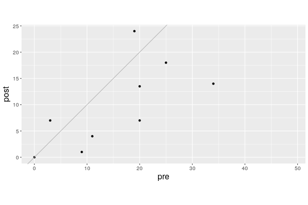
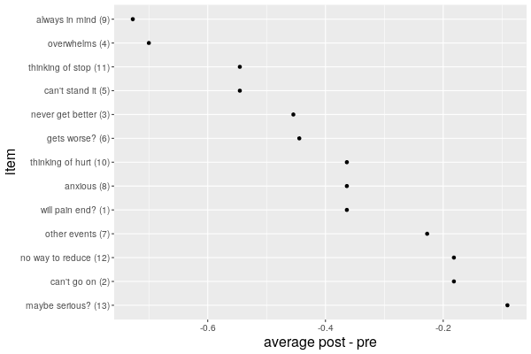
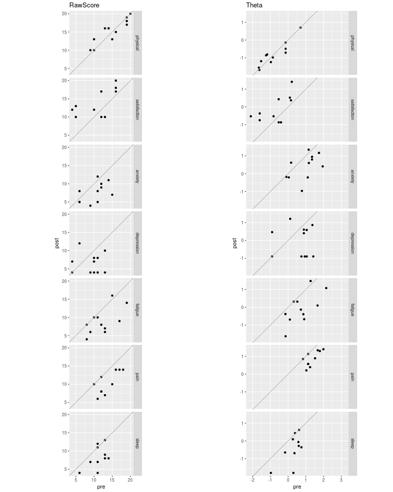
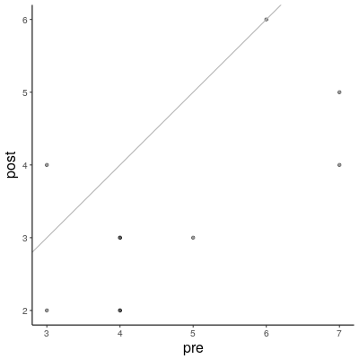
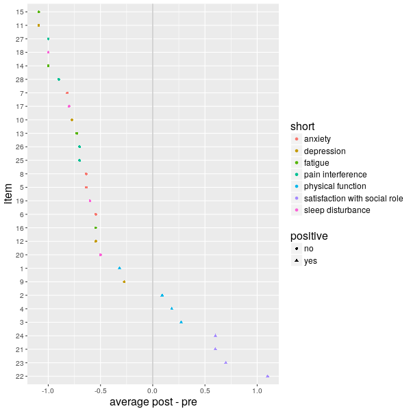
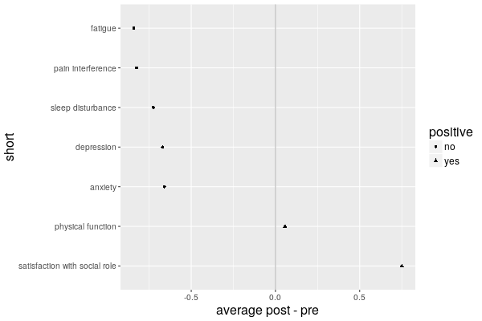

These pages describe the results for the "Hello Pain" course that ran from May 4, 2017 through June 22, 2017. Participants completed two survey instruments: the Pain Catastrophizing Scale (PCS) developed by Dr. Michael Sullivan of McGill University, and the PROMIS 29 Profile of the <TBD>.
PCS
The PCS consisted of 13 items each describing some psychologically painful state associated with experiencing actual physical pain. A given item allowed 5 ordered responses ranging from 0—for "not at all"—to 4—for "all the time"—indicating the severity for that particular state. Nine individuals successfully filled out the entire PCS both before and after the program. If we sum up their total scores for each assessment and then plot the post scores against the pre scores we get the plot below.

The point for a respondent whose score does not change at all will fall on the sloping straight line that bisects the plot. Since higher scores are undesirable participants for whom the program was successful will fall below the line. The vertical distance between a point and the line represents the improvement (degradation). All but three improved.
We can explore which PCS items the program most effectively addressed by taking the differences between the post and pre scores and averaging them up. Eleven of the participants filled out enough of the instruments before and after to contribute data to these averages. Instead of plotting post against pre as before I simply show the differences so that we can identify the items. (I have abbreviated the text in a way that I hope is obvious and have added the number indicating the order in which the item appears in parentheses.) The plot shows that the group as a whole improved with respect to all the features of the survey. For example, with respect to the 9th entry, "I can't seem to keep it out of my mind," the average improvement was around 0.7.

PROMIS 29
The PROMIS 29 instrument consisted of one item describing overall pain intensity and seven separate short forms each concerned with one particular feature and each contributing four items each. The features are
- physical function
- satisfaction with social role
- anxiety
- depression
- fatigue
- sleep disturbance
- pain interference
only the first two of which are positive. That is, we would hope that the program would increase the reported values of "physical function" and "satisfaction with social role" and decrease the values of all the others.
As before with PCS one can calculate the raw scores and compare post and pre, but in addition one can also estimate an underlying tendency or propensity that reflects the intensity of the feature the form focuses on. In the literature this propensity is called "theta." The larger theta is the more strongly the individual exhibits the feature. In practice the forms are engineered so that theta ranges from a low of around -2 to a high of +2. The developers of PROMIS have made the functionality for converting raw scores to theta available over the web through the Health Assessment Center. The plot below compares the pre and post raw and processed scores for each of the eleven individuals and for each of the seven forms. I have abbreviated the names of the forms in a way that I hope is obvious. Again, ideally the first two, "physical" for "physical function" and "satisfaction" for "satisfaction with social" role would show increases and have points above the line and the rest would be below. With the possible exception of physical this seems to hold.

The raw scores for for question 29 on pain intensity appear below. The points corresponding to the ten individuals who addressed this item both pre and post are not completely opaque so that one can—barely—make out the two pairs that overplot.

In a similar way to the PCS section the final two plots describe the change in raw scores averaged over participants for both the individual PROMIS 29 entries and for the seven PROMIS 29 constituent forms. (Entry 29 on pain intensity is on a different scale and is not included.)

